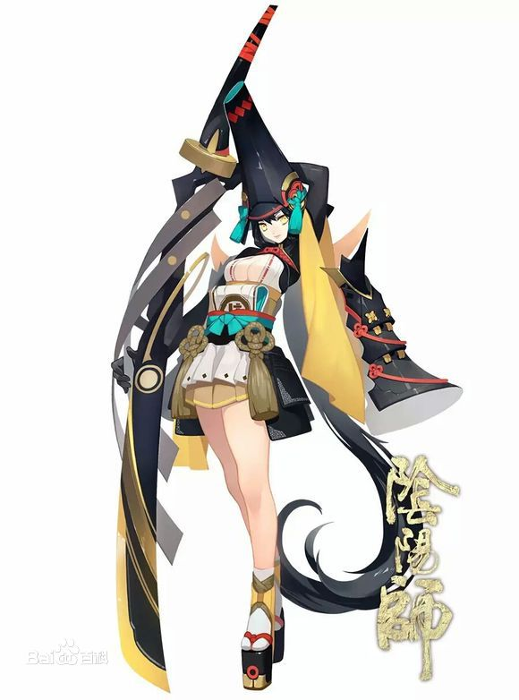
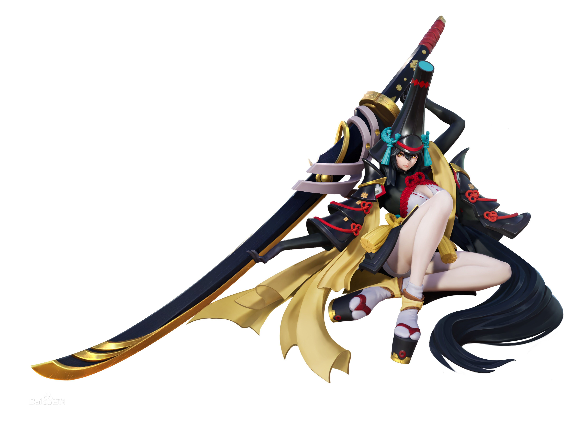
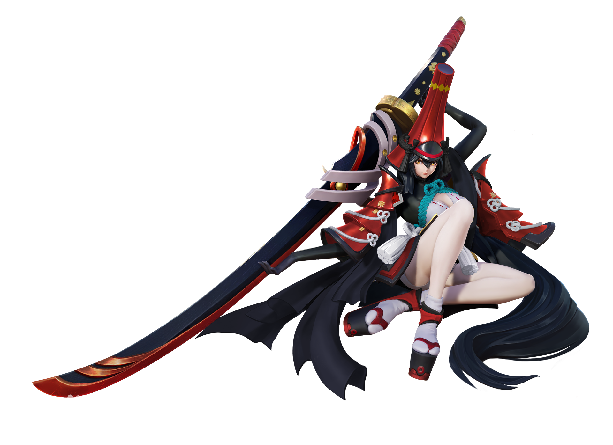
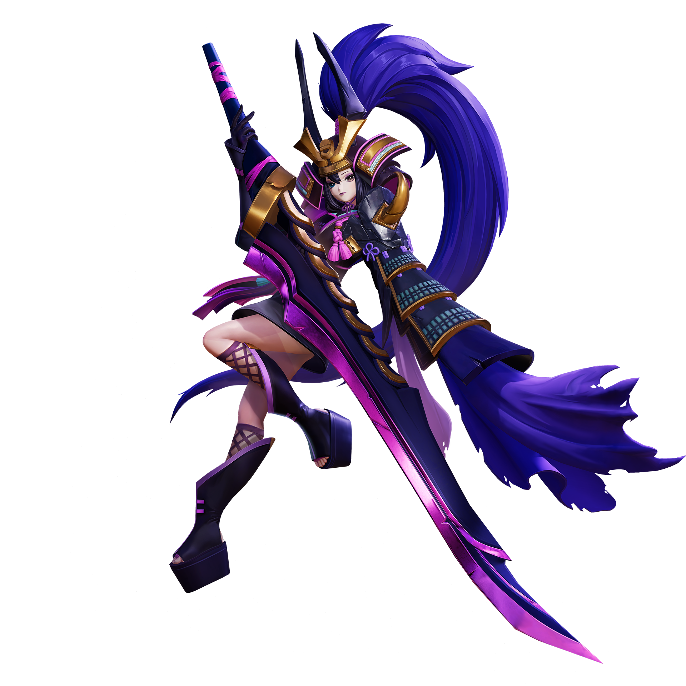
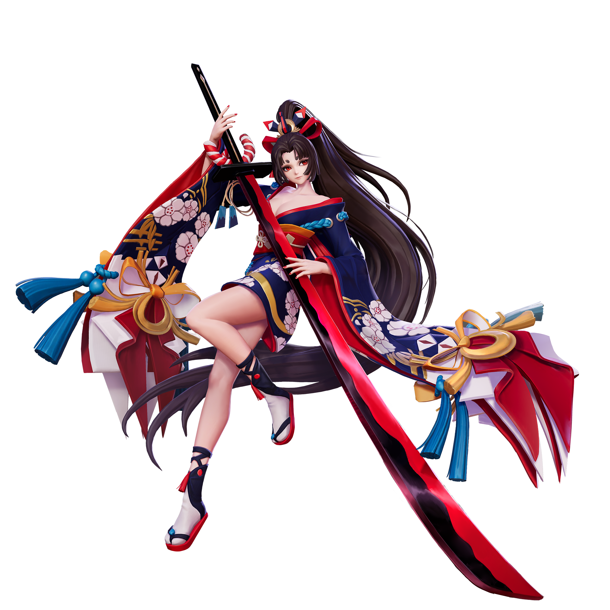
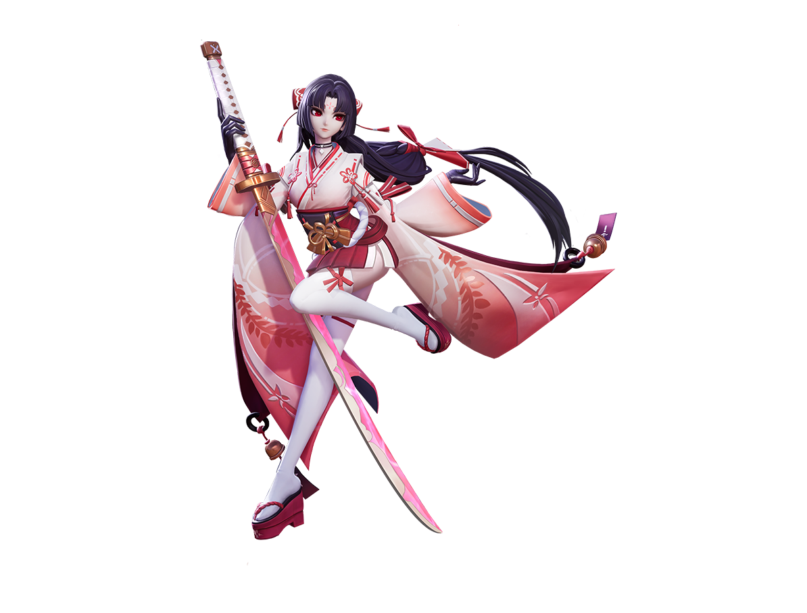
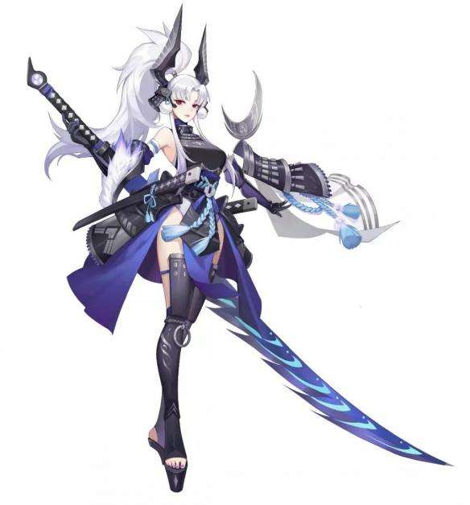

妖刀姬
返回决战平安京
妖刀姬

妖刀姬最新皮肤《神罚之光》
妖刀姬，网易公司研发的3D日式和风回合制RPG手游《阴阳师》中SSR级别式神之一。
2016年10月1日上线与玩家见面。
手持巨大妖刀的少女。原本是人类，却不知为何与妖刀相互依存。平时看上去有些阴郁
也很少会和他人说话。但战斗时却会变成另一个人，残暴又恋战，没有人能躲下她的妖
刀，刀下亡魂累累，平静下来后，她又会因伤害了太多人而自责。有时候“强大”并不
是一件好事，必须有承受和控制这份“强大”的能力才行。
技能介绍
被动技能
|
Q技能
|
W技能

|
E技能
|
R技能

|
玩法介绍
使用3技能击败单位刷新技能，打出多段伤害或者位移；利用2技能控制敌人更好地输
出；巧用1技能躲过致命伤害或反杀；大招对敌方式神造成成吨伤害。
技能加点建议
主升不祥之刃，副升噬魔。
灵咒建议
瞬步、自愈
阴阳术建议
秘术·豹袭
用两次不同的普攻或技能命中敌方式神后标记敌人，再次造成伤害时，召
唤黑豹扑袭敌人造成（8*等级+0.1*法强+0.25*额外攻击力+0.02*敌方最大生命值）
点法术伤害，冷却时间18秒。
巫女祷言
灵咒技能冷却时间降低15%。
破灭
对生命值低于30%的敌人，造成伤害提高4%。
出装建议
建议一：上单、爆发
名刀·三日月、叶隐具足、天之麻迦古弓、天绝·大典太、八岐大蛇之目、千鸟双月
建议二：上单、持续输出
天照·丛云剑、叶隐具足、名刀·三日月、天绝·大典太、凶刀·鬼丸、千鸟双月
建议三：打野、爆发
无字枪、叶隐具足、天之麻迦古弓、天绝·大典太、凶刀·鬼丸、名刀·三日月
式神皮肤
原画

银珠

大成觉醒

樱雨刀舞

御神之刃

神罚之光

式神传记
传记一
你也看到了吗……？
当我遭遇危险的时候，就会变成那样……变成兵器，这把妖刀。很可怕，对吧？
「强」的话，会伤害别人；「弱」的话，会被人伤害——「力量」就是这样的东西。
「强者」和「弱者」，到底哪一边比较幸福呢？
你也不知道答案吗？……也许没有谁知道吧。 [2]
传记二
人类和我完全不一样，他们很「弱」。
但我却觉得有些熟悉。
我平时很少说话，也不知道要怎么诉说。可是我想试着和他们交谈，也想试着靠近他们，还想试着去理解他们。
也许那么做之后，我就能知道为什么我会觉得那么熟悉了。
但我却不能靠近他们。
……很想，可是不能。
传记三
虽然不想遭遇「危险」，才会变成那个样子。不过对许多人来说，我才是「危险」。
为了保护自己不受「伤害」，而「伤害」他人……就是我的宿命。
所以，不要和我交谈，不要理解我，也不要靠近……如果你不想，被我「伤害」的话。
善良？……不，我想我并不是善良。要说的话……或许「弱」的人是我也说不定。
只有「弱者」，才会害怕被「伤害」并为此不惜去「伤害」其他人。
我好像说的太多了，下次再会。
……或许不再会对你来说，反而比较好。
那么还是，后会无期吧。
返回决战平安京